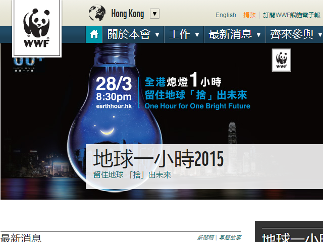

世界自然基金會
目的與使命
世界自然基金會是全球性環保組織，總會於 1961 年成立，總部設於瑞士。 分會及項目遍佈全球超過100個國家。本會的使命是透過以下途徑， 建立人類與大自然和諧共存的未來：
- 保護全球生物多樣性
- 確保以可持續方式使用可再生天然能源
- 推廣減少污染和浪費的行為
自1981年起，世界自然基金會香港分會透過保育、生態足印及環境教育項目， 締造生生不息的地球。為響應我們在全球的使命， 世界自然基金會香港分會的願景是透過保育自然環境， 減少碳排放造成的污染，市民「惜」用資源， 推動香港成為亞洲最可持續發展的城市。
活動與服務
最近活動
跑出未來
「跑出未來」是本會首個慈善跑步活動，活動主題為提倡减少消耗不必要的地球資源。 期間參賽者不但可見證「地球一小時」行動的熄燈情景，與星光夜空下的維港相伴作賽， 更可以行動喚醒大眾改變生活習慣，身體力行支持節能，推廣低碳生活。參觀米埔
米埔沼澤周圍的濕地及內后海灣，為訪客提供親身感受香港生物多樣性的機會。 米埔自然保護區是拉姆薩爾濕地的重要一部分，作為保護區的管理員，世界自然基金會舉辦公眾導賞團，為大眾提供參觀米埔的機會。步走大自然
步走大自然是每年一度的盛事。 這是一個難得的機會讓參觀者體驗米埔自然優美的環境， 同時享受和了解世界自然基金會的保育工作。香港觀鳥大賽
香港觀鳥大賽是觀鳥愛好者一年一度的技術較量，亦是世界自然基金會歷史最悠久的籌款活動， 所籌得的款項會全數撥至米埔自然保護區， 以支持這片在《拉姆薩爾公約》中被確認為「國際重要濕地」的管理及保育工作。
服務
保育
世界自然基金會致力保育海洋、淡水資源、物種及管理棲息地。世界自然基金會的保育工作遍及香港境內外及區外其他地方， 監察及保存香港豐富的生物多樣性。生態足印
如果資源耗用的速度持續，到了2030年代中期， 我們就需要兩個地球的資源才可維持現時的生活方式。世界自然基金會率先透過宣傳、 廣告及推廣活動，減少香港的生態足印。教育
下一代是未來的主人翁，有責任保護環境。世界自然基金會推行可持續發展教育項目(ESD)，透過趣味活動和參與體驗，推動社區為保育作出貢獻。
就業與義工
目前職位空缺
- 生物多樣性項目主任（2年合約）（職位編號： W-PO-DB）
- 資料庫管理員（職位編號： W-DO）
- 高級項目發展主任（職位編號： W-SPDO）
- 項目主任（職位編號： W-PO-SS-C）
- 籌款活動經理（職位編號： W-MFET）
義工
成為世界自然基金會義工，身體力行為本地保育出一分力。本會提供不同義工崗位如辦公室文書、籌募活動及米埔戶外工作等。請下載義工申請表格 或電郵至volunteers@wwf.org.hk
聯絡資料
24 小時熱線: (852) 2526 1011
葵興辦事處
- 傳真： (852) 2845 2764
- 電郵： wwf@wwf.org.hk
- 網頁： http://www.wwf.org.hk
- 地址： 香港新界葵涌葵昌路 8 號萬泰中心15 樓
中環訪客中心
- 傳真： (852) 2845 2734
- 地址： 香港中環纜車徑一號
米埔自然保護區 - 導賞活動
- 傳真： (852) 2482 0369
- 電郵： publicvisit@wwf.org.hk
米埔自然保護區 - 教育中心
- 傳真： (852) 2482 0369
- 電郵： maipo@wwf.org.hk
元洲仔自然環境保護研究中心
- 傳真： (852) 2651 0276
- 電郵： ihcsc@wwf.org.hk
海下灣海洋生物中心
- 傳真： (852) 2328 2633
- 電郵： hhwmlc@wwf.org.hk
其他
支持世界自然基金會
個人支持
許多的物種及其生境均面對著日益嚴重的不同威脅。我們生活在地球上有責任好好地保育那些珍貴的資源及環境， 好讓我們的下一代仍可以繼續欣賞及享用。請支持本會，立即捐款，一起打造可持續發展的生活環境。- 一次性捐款 凡一次性捐款港幣$500或以上均可免費獲得我們一年會籍。
- 每月捐款 你的每月捐款為本會提供穩定的收入來源， 令我們的保育及教育項目得以延續及發展。每月捐款項亦可以減低日常的行政費用， 從而使我們可更有效地善用你的一分一毫。
「助養」瀕危野生動物
全球只剩下1,600隻大熊貓及3,200隻野生老虎，參加每月「助養」計劃， 你不但可以拯救牠們免受絕種危機威脅、保護其棲息地， 更可同時支持本會於香港的保育工作。
成為會員
成為世界自然基金會會員，你將為國際保育事業出一分力， 協助保護環境，減少生態足印。為了讓會員得到最新的本地、區內其他城市及國際保育資訊， 你將得到世界自然基金會出版的季刊《生命之延》及免費米埔導賞團。 我們還有其他會籍優惠，請即成為會員吧。網站截圖：
回到最頂